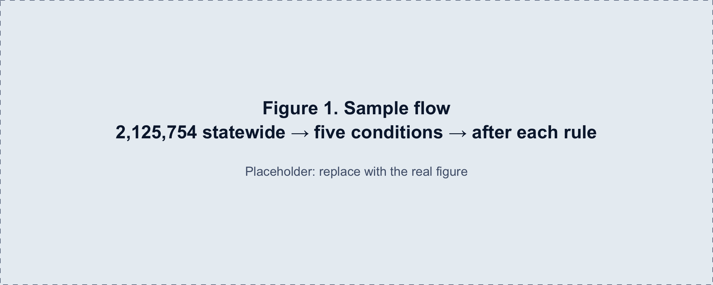
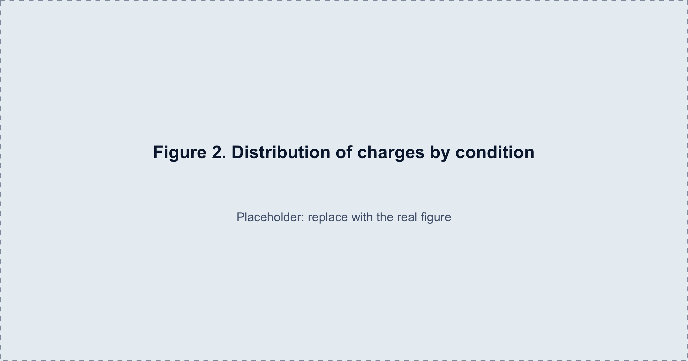
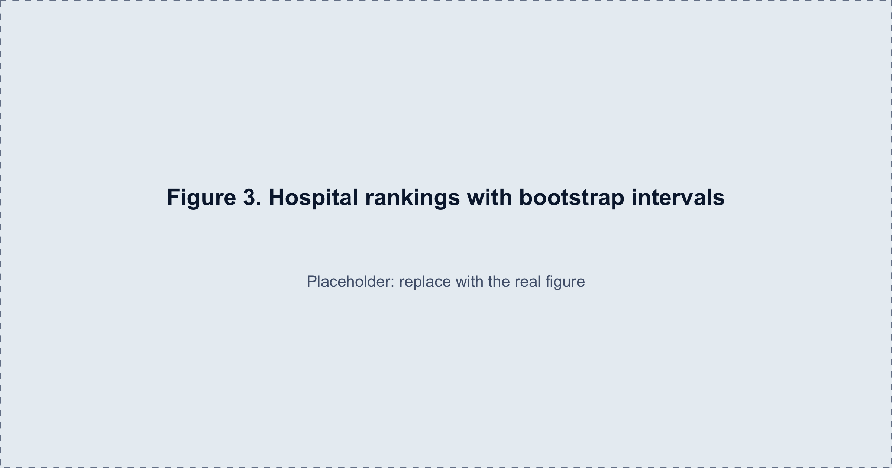
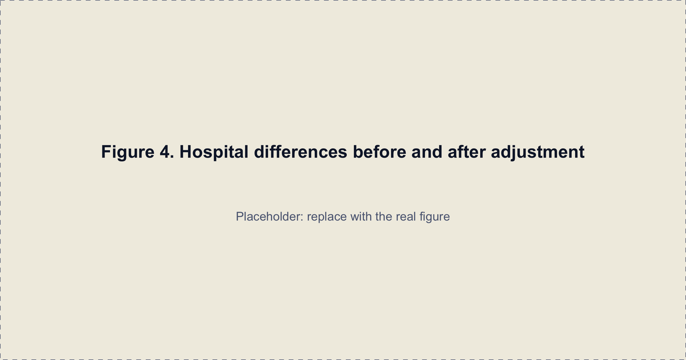
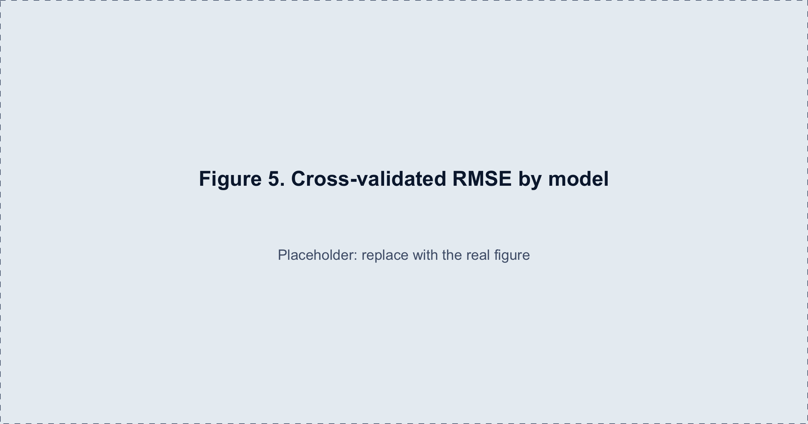
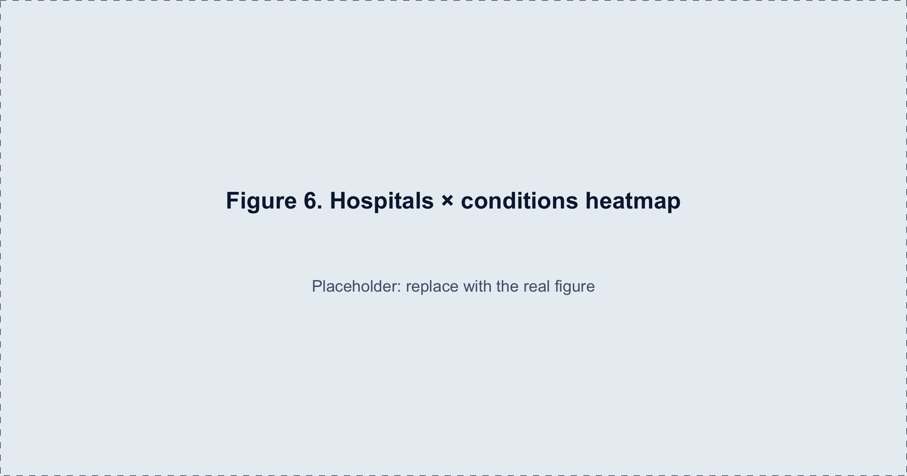

Variation in hospital charges and estimated costs for five common conditions in New York, 2023.
Yimeng Cao (yc4959) · Zeheng Wei (zw3268) · Yichuan Ma (ym3197) · Jiaxuan Su (js7161) · Yulin Zhu (yz5458)
Placeholder. In New York, patients hospitalized for the same condition can receive very different bills depending on where they are treated. This section states the goal of the project and why it matters, in plain language.
Placeholder second paragraph: the policy background, such as price transparency rules and surprise billing.
Placeholder. The three questions as first proposed:
Placeholder paragraph on how the questions changed: the fifth condition became kidney and urinary tract infections; bootstrap and cross-validation became core analyses; ownership was added as a comparison.
Placeholder. Source, how it was downloaded, how it was cleaned, and how many stays remain after each step. See also Data and methods.
placeholder_fig("Figure 1. Sample flow\n2,125,754 statewide → five conditions → after each rule")
Placeholder. What the distributions look like and which choices they led to.
placeholder_fig("Figure 2. Distribution of charges by condition")
Placeholder paragraph.
placeholder_fig("Figure 3. Hospital rankings with bootstrap intervals")
Placeholder. The formal analyses, described in enough detail to be repeated.
Placeholder paragraph with model formulas.
placeholder_fig("Figure 4. Hospital differences before and after adjustment")
placeholder_fig("Figure 5. Cross-validated RMSE by model")
placeholder_fig("Figure 6. Hospitals × conditions heatmap")
Placeholder. What we found, whether it matched expectations, and what it does and does not tell us.
Placeholder. Charges are not payments; costs are estimates; the data are observational.
Placeholder.